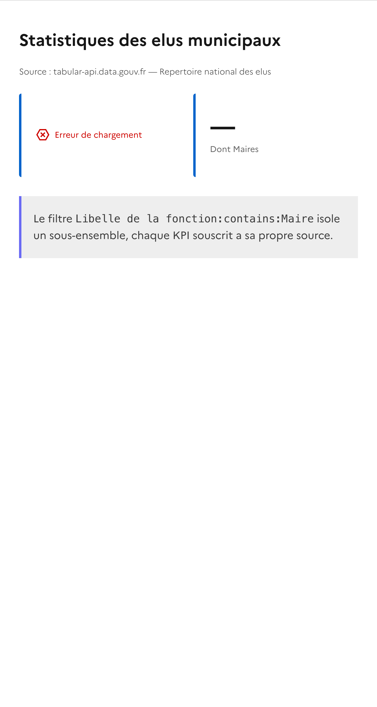

Guide utilisateur — gouv-widgets
Ce guide presente les principaux parcours d'utilisation de gouv-widgets, une bibliotheque de Web Components de dataviz pour les sites gouvernementaux francais, conforme au DSFR.
Chaque parcours est presente comme une user story :
L'interface
L'application est accessible depuis la page d'accueil qui regroupe tous les outils :

Les outils disponibles sont :
- Sources : connecter et gerer les sources de donnees (Grist, API, manuelles)
- Builder : generateur visuel de graphiques pas-a-pas
- Builder IA : generateur de graphiques par conversation avec l'IA Albert
- Playground : editeur de code interactif avec apercu temps reel
- Dashboard : editeur visuel de tableaux de bord multi-widgets
- Monitoring : suivi des deployements de widgets en production
Creer un graphique a partir de donnees locales
Etape 1 — Ouvrir la page Sources
Naviguez vers Sources depuis le menu. La page affiche les connexions existantes (Grist, API) et les sources sauvegardees. Cliquez sur "Creer une source manuelle".

Etape 2 — Saisir les donnees
La modale de creation s'ouvre avec trois modes de saisie : Tableau (saisie directe), JSON (coller du JSON) ou CSV (importer un fichier).
- Donnez un nom a la source (ex: "Statistiques regions")
- Remplissez le tableau avec vos donnees
- Cliquez sur Sauvegarder

Etape 3 — Ouvrir le Builder et charger la source
Naviguez vers le Builder. Dans l'etape 1 "Source de donnees", selectionnez votre source dans la dropdown puis cliquez sur Charger. Les champs disponibles apparaissent dans les selecteurs.

Etape 4 — Choisir le type de graphique
L'etape 2 propose une grille de 11 types de graphiques : barres, lignes, camembert, radar, carte, KPI, tableau, etc. Cliquez sur le type souhaite (ici Barres).

Etape 5 — Configurer et generer
Completez la configuration :
- Axe X : le champ de categorie (ex:
region) - Axe Y : le champ numerique (ex:
PIB) - Agregation : moyenne, somme, comptage, min, max
- Titre et sous-titre dans l'onglet Apparence
Puis cliquez sur Generer le graphique.

Etape 6 — Copier le code genere
Basculez sur l'onglet Code genere dans le panneau de droite. Le code HTML complet est affiche, pret a etre copie. Cliquez sur Copier le code pour l'integrer dans votre page.

Le code genere est autonome : il inclut les balises DSFR Chart (<bar-chart>, <line-chart>, etc.) avec les donnees en attributs, ainsi que les liens vers les CSS et JS necessaires.
Creer un graphique dynamique depuis Grist
Etape 1 — Creer une connexion Grist
Dans Sources, cliquez sur Nouvelle connexion. Selectionnez le type Grist et renseignez :
- Le nom de la connexion
- L'URL du serveur Grist (ex:
https://grist.numerique.gouv.fr) - Cochez "Document public" si le document est partage publiquement, sinon entrez votre cle API
Cliquez sur Tester et sauvegarder.

Etape 2 — Explorer les donnees Grist
Une fois connecte, cliquez sur la connexion dans la barre laterale. L'explorateur affiche les documents et tables disponibles. L'onglet Apercu permet de previsualiser les donnees.

Etape 3 — Activer le mode dynamique dans le Builder
Dans le Builder, selectionnez la source Grist et chargez les champs. Une section supplementaire apparait : Mode de generation. Selectionnez Chargement dynamique pour que le code genere interroge Grist en temps reel.

- Donnees integrees : les donnees sont copiees en dur dans le HTML (statique)
- Chargement dynamique : utilise
<gouv-source>+<gouv-query>+<gouv-dsfr-chart>pour charger les donnees en temps reel
Etape 4 — Code genere avec composants dynamiques
Apres avoir configure et genere le graphique, le code genere contient les Web Components gouv-widgets :

Le code genere ressemble a :
<gouv-source id="data" url="https://grist.numerique.gouv.fr/api/docs/xxx/tables/yyy/records"
transform="records[].fields"></gouv-source>
<gouv-query id="query-result" source="data" group-by="Pays" aggregate="PIB:avg" order-by="value:desc"></gouv-query>
<gouv-dsfr-chart source="query-result" type="bar" label-field="Pays" value-field="PIB"
title="PIB par pays"></gouv-dsfr-chart>
Generer un graphique avec l'IA (Builder IA)
Etape 1 — Charger une source et ouvrir le chat
Dans le Builder IA, selectionnez une source de donnees et cliquez sur Charger. L'interface se compose de deux zones :
- Le panneau de configuration et le chat IA a gauche
- Le panneau d'apercu, code et donnees a droite

Etape 2 — Decrire le graphique souhaite
Ecrivez dans le chat ce que vous souhaitez, en langage naturel. Par exemple :
L'IA analyse les champs disponibles dans vos donnees et genere la configuration correspondante. Elle propose ensuite des suggestions pour affiner le resultat.

Etape 3 — Iterer et exporter
L'IA repond avec :
- Le graphique genere dans l'apercu
- L'action executee (en JSON)
- Des suggestions pour modifier le graphique ("Passe en camembert", "Filtre sur IDF", etc.)
Vous pouvez continuer la conversation pour ajuster le graphique, puis copier le code depuis l'onglet Code genere.

Prototyper avec le Playground
Etape 1 — Charger un exemple
Le Playground est un editeur de code split avec un apercu en temps reel. Un selecteur d'exemples propose des modeles classes en 3 categories :
- Composants gouv-widgets :
gouv-source+gouv-query+gouv-dsfr-chart(barres, camembert, lignes),gouv-kpi,gouv-datalist, dashboard complet - DSFR Chart natifs : composants DSFR (barres, lignes, camembert, jauge, radar, carte)

Etape 2 — Executer et visualiser
Selectionnez un exemple (ici "DSFR Bar Chart") et cliquez sur Executer. Le code a gauche est rendu en temps reel dans l'apercu a droite.

L'exemple ci-dessus charge les prix moyens du controle technique par region depuis l'API data.economie.gouv.fr et les affiche avec un composant <bar-chart> DSFR natif.
Etape 3 — Modifier et sauvegarder
Modifiez le code dans l'editeur (theme Dracula), puis :
- Cliquez sur Executer (ou
Ctrl+Entree) pour voir le resultat - Cliquez sur Copier pour copier le code
- Cliquez sur Favoris pour sauvegarder dans vos favoris

Etape 4 — Tester les composants gouv-widgets
L'exemple "gouv-source + gouv-dsfr-chart" montre comment connecter une source de donnees a un graphique DSFR via les Web Components :

Composer un tableau de bord
Etape 1 — Decouvrir l'editeur de dashboard
Le Dashboard est un editeur visuel avec :
- A gauche : la bibliotheque de widgets (KPI, Graphique, Tableau, Texte), les favoris sauvegardes, et les reglages de grille
- Au centre : la grille de placement avec des zones de depot

Etape 2 — Placer des widgets
Glissez un widget depuis la bibliotheque ou un favori vers une cellule de la grille. Chaque widget peut etre configure en cliquant dessus.
La barre d'outils permet de :
- Nouveau / Ouvrir / Sauvegarder un dashboard
- Exporter HTML : telecharger le dashboard en page HTML autonome
- Apercu : voir le rendu final dans un navigateur

Etape 3 — Configurer la grille
La section Grille dans la barre laterale permet d'ajuster :
- Le nombre de colonnes (1 a 4)
- L'espacement entre les widgets (Normal ou Sans)
Chaque ligne peut avoir un nombre de colonnes different, permettant des layouts complexes (ex: 3 KPI en ligne 1, 2 graphiques en ligne 2).

Les onglets Code genere et JSON permettent de recuperer le code HTML ou la configuration JSON du dashboard.
Connecter une API REST externe
Etape 1 — Creer une connexion API
Dans Sources, cliquez sur Nouvelle connexion et selectionnez le type API REST/JSON :
- Selectionnez le type API
- Entrez l'URL de l'API (ex:
https://data.economie.gouv.fr/api/explore/v2.1/catalog/datasets/industrie-du-futur/records) - Indiquez le chemin vers les donnees dans la reponse JSON (ex:
resultspour OpenDataSoft,datapour tabular-api.data.gouv.fr) - Cliquez sur Tester et sauvegarder

- OpenDataSoft :
data.economie.gouv.fr(chemin :results) - Tabular API :
tabular-api.data.gouv.fr(chemin :data) - Grist API :
grist.numerique.gouv.fr(chemin :records[].fields)
Etape 2 — Generer le graphique
Dans le Builder, selectionnez la source API, choisissez un type de graphique et configurez les champs. Ici, un graphique en lignes des beneficiaires de l'Industrie du futur par region :

Etape 3 — Recuperer le code
Le code genere inclut soit un fetch direct vers l'API, soit les composants <gouv-source> et <gouv-dsfr-chart> pour un chargement dynamique.

Suivre les deployements dans le Monitoring
Vue d'ensemble
La page Monitoring affiche automatiquement les donnees collectees par le systeme de beacons. Chaque composant gouv-widgets envoie un signal au deploiement, permettant de suivre l'utilisation.

KPIs de suivi
Quatre indicateurs en haut de page resument l'activite :
- Sites deployes : nombre de domaines uniques utilisant les widgets
- Widgets actifs : nombre total d'instances de composants
- Appels totaux : volume cumule de chargements de pages
- Derniere mise a jour : horodatage de la derniere collecte

Filtrer et exporter
Le tableau detaille liste chaque deploiement avec le site, la page, le composant utilise, le type de graphique, et les dates d'activite. Vous pouvez :
- Filtrer par composant ou type de graphique
- Rechercher un domaine specifique
- Exporter en CSV pour analyse
- Actualiser pour recharger les donnees

Exemples d'implementations
20 exemples prets a l'emploi, organises en deux modes de construction. Chaque exemple est disponible dans le Playground pour le tester et le modifier en temps reel.
Trois sources de donnees publiques sont utilisees en alternance :
- Fiscalite locale — Taux de taxes foncieres et d'habitation par commune (data.economie.gouv.fr)
- Elus municipaux — Repertoire national des elus (tabular-api.data.gouv.fr)
- Industrie du futur — Beneficiaires et investissements par region (data.economie.gouv.fr)
Mode direct : gouv-source → composant
Les donnees de la source sont transmises directement au composant de visualisation, sans transformation intermediaire.
Barres — Taux de taxe fonciere par commune
Graphique en barres affichant les taux de taxe fonciere de 15 communes. Tester dans le Playground
<gouv-source id="data" url="https://data.economie.gouv.fr/.../fiscalite-locale-des-particuliers/records?limit=15" transform="results"></gouv-source> <gouv-dsfr-chart source="data" type="bar" label-field="libcom" value-field="taux_global_tfb" unit-tooltip="%" selected-palette="categorical"> </gouv-dsfr-chart>

Courbe — Beneficiaires Industrie du futur
Courbe du nombre de beneficiaires par departement. Tester dans le Playground
<gouv-source id="data" url="https://data.economie.gouv.fr/.../industrie-du-futur/records?limit=20" transform="results"></gouv-source> <gouv-dsfr-chart source="data" type="line" label-field="nom_departement" value-field="nombre_beneficiaires"> </gouv-dsfr-chart>

Camembert — Poids demographique
Diagramme circulaire du poids demographique par commune. Tester dans le Playground
<gouv-source id="data" url="https://data.economie.gouv.fr/.../fiscalite-locale-des-particuliers/records?limit=8" transform="results"></gouv-source> <gouv-dsfr-chart source="data" type="pie" label-field="libcom" value-field="mpoid"> </gouv-dsfr-chart>

Radar — Beneficiaires par region
Graphique radar montrant le profil des beneficiaires. Tester dans le Playground
<gouv-source id="data" url="https://data.economie.gouv.fr/.../industrie-du-futur/records?limit=6" transform="results"></gouv-source> <gouv-dsfr-chart source="data" type="radar" label-field="nom_region" value-field="nombre_beneficiaires"> </gouv-dsfr-chart>

Jauge — Taux de taxe fonciere
Jauge affichant le taux de taxe fonciere d'une commune (1 enregistrement). Tester dans le Playground
<gouv-source id="data" url="https://data.economie.gouv.fr/.../fiscalite-locale-des-particuliers/records?limit=1" transform="results"></gouv-source> <gouv-dsfr-chart source="data" type="gauge" value-field="taux_global_tfb"> </gouv-dsfr-chart>

Nuage — Investissement vs participation
Nuage de points croisant investissement et participation de l'Etat. Tester dans le Playground
<gouv-source id="data" url="https://data.economie.gouv.fr/.../industrie-du-futur/records?limit=100" transform="results"></gouv-source> <gouv-dsfr-chart source="data" type="scatter" label-field="montant_investissement" value-field="montant_participation_etat"> </gouv-dsfr-chart>

Barres + ligne — Investissements
Combine barres (investissement) et ligne (participation Etat) via value-field-2.
Tester dans le Playground
<gouv-source id="data" url="https://data.economie.gouv.fr/.../industrie-du-futur/records?limit=15" transform="results"></gouv-source> <gouv-dsfr-chart source="data" type="bar-line" label-field="nom_departement" value-field="montant_investissement" value-field-2="montant_participation_etat" name='["Investissement", "Participation Etat"]'> </gouv-dsfr-chart>

Carte — Beneficiaires par departement
Carte de France coloree par nombre de beneficiaires, via code-field.
Tester dans le Playground
<gouv-source id="data" url="https://data.economie.gouv.fr/.../industrie-du-futur/records?limit=100" transform="results"></gouv-source> <gouv-dsfr-chart source="data" type="map" code-field="code_departement" value-field="nombre_beneficiaires" selected-palette="sequentialAscending"> </gouv-dsfr-chart>

KPI — Indicateurs Industrie du futur
Quatre indicateurs cles calcules directement depuis les donnees brutes. Tester dans le Playground
<gouv-source id="data" url="..." transform="results"></gouv-source> <gouv-kpi source="data" valeur="sum:nombre_beneficiaires" label="Total beneficiaires" format="nombre"></gouv-kpi> <gouv-kpi source="data" valeur="avg:nombre_beneficiaires" label="Moyenne" format="decimal"></gouv-kpi> <gouv-kpi source="data" valeur="max:montant_investissement" label="Investissement max" format="euro" couleur="vert"></gouv-kpi> <gouv-kpi source="data" valeur="count" label="Enregistrements" format="nombre"></gouv-kpi>

Tableau — Registre des elus
Tableau interactif avec recherche, filtres, tri et export CSV. Tester dans le Playground
<gouv-source id="data" url="https://tabular-api.data.gouv.fr/api/resources/.../data/?page_size=50" transform="data"></gouv-source> <gouv-datalist source="data" colonnes="Nom de l'élu:Nom, Prénom de l'élu:Prenom, Libellé de la fonction:Fonction" recherche="true" filtres="Libellé du département" tri="Nom de l'élu:asc" pagination="10" export="csv"> </gouv-datalist>

Avec requete : gouv-source → gouv-query → composant
Les donnees passent par gouv-query qui les filtre, regroupe et/ou agrege avant de les transmettre au composant de visualisation.
Barres — Beneficiaires agreges par region
Regroupe par region et somme les beneficiaires avec group-by + aggregate.
Tester dans le Playground
<gouv-source id="data" url="..." transform="results"></gouv-source> <gouv-query id="q-bar" source="data" group-by="nom_region" aggregate="nombre_beneficiaires:sum:beneficiaires" order-by="beneficiaires:desc" limit="10"> </gouv-query> <gouv-dsfr-chart source="q-bar" type="bar" label-field="nom_region" value-field="beneficiaires"> </gouv-dsfr-chart>

Courbe — Taux moyen TFB par region
Calcule la moyenne du taux de taxe fonciere par region. Tester dans le Playground
<gouv-source id="data" url="..." transform="results"></gouv-source> <gouv-query id="q-line" source="data" group-by="libreg" aggregate="taux_global_tfb:avg:taux_moyen" order-by="taux_moyen:desc"> </gouv-query> <gouv-dsfr-chart source="q-line" type="line" label-field="libreg" value-field="taux_moyen" unit-tooltip="%"> </gouv-dsfr-chart>

Camembert — Elus par categorie socio-pro
Compte les elus par categorie socio-professionnelle via count.
Tester dans le Playground
<gouv-source id="data" url="https://tabular-api.data.gouv.fr/api/resources/.../data/?page_size=100" transform="data"></gouv-source> <gouv-query id="q-pie" source="data" group-by="Libellé de la catégorie socio-professionnelle" aggregate="Code sexe:count:nombre" order-by="nombre:desc" limit="8"> </gouv-query> <gouv-dsfr-chart source="q-pie" type="pie" label-field="Libellé de la catégorie socio-professionnelle" value-field="nombre"> </gouv-dsfr-chart>

Radar — Investissement moyen par region
Calcule l'investissement moyen par region (limite a 6 pour lisibilite). Tester dans le Playground
<gouv-query id="q-radar" source="data" group-by="nom_region" aggregate="montant_investissement:avg:investissement" limit="6"> </gouv-query> <gouv-dsfr-chart source="q-radar" type="radar" label-field="nom_region" value-field="investissement"> </gouv-dsfr-chart>

Jauge — Taux moyen TFB regional
Calcule la moyenne par region, trie par taux decroissant et prend le premier (limit=1). Tester dans le Playground
<gouv-query id="q-gauge" source="data" group-by="libreg" aggregate="taux_global_tfb:avg:taux_moyen" order-by="taux_moyen:desc" limit="1"> </gouv-query> <gouv-dsfr-chart source="q-gauge" type="gauge" value-field="taux_moyen"> </gouv-dsfr-chart>

Nuage — TFB vs TH par departement
Double agregation : moyenne TFB (axe X) et TH (axe Y) par departement. Tester dans le Playground
<gouv-query id="q-scatter" source="data" group-by="libdep" aggregate="taux_global_tfb:avg:tfb, taux_global_th:avg:th" limit="30"> </gouv-query> <gouv-dsfr-chart source="q-scatter" type="scatter" label-field="tfb" value-field="th"> </gouv-dsfr-chart>

Barres + ligne — TFB et TH par region
Barres pour le TFB moyen et ligne pour le TH moyen, combines via value-field-2.
Tester dans le Playground
<gouv-query id="q-barline" source="data" group-by="libreg" aggregate="taux_global_tfb:avg:tfb, taux_global_th:avg:th" order-by="tfb:desc"> </gouv-query> <gouv-dsfr-chart source="q-barline" type="bar-line" label-field="libreg" value-field="tfb" value-field-2="th" name='["Taxe fonciere (TFB)", "Taxe habitation (TH)"]' unit-tooltip="%"> </gouv-dsfr-chart>

Carte — Taux TFB par departement
Moyenne du taux TFB par code departement, affichee sur la carte de France. Tester dans le Playground
<gouv-query id="q-map" source="data" group-by="dep" aggregate="taux_global_tfb:avg:taux"> </gouv-query> <gouv-dsfr-chart source="q-map" type="map" code-field="dep" value-field="taux" selected-palette="sequentialAscending"> </gouv-dsfr-chart>

KPI — Statistiques des elus avec filtre
Filtre les Maires et compare le sous-ensemble au total via deux KPI distincts. Tester dans le Playground
<gouv-source id="data" url="..." transform="data"></gouv-source> <gouv-query id="q-maires" source="data" filter="Libellé de la fonction:contains:Maire"> </gouv-query> <gouv-kpi source="data" valeur="count" label="Total des elus" format="nombre"></gouv-kpi> <gouv-kpi source="q-maires" valeur="count" label="Dont Maires" format="nombre" couleur="bleu"></gouv-kpi>
Tableau — Elus filtres par region
Filtre les elus d'Ile-de-France et affiche le resultat dans un tableau interactif. Tester dans le Playground
<gouv-source id="data" url="..." transform="data"></gouv-source> <gouv-query id="q-datalist" source="data" filter="Libellé de la région:contains:Ile"> </gouv-query> <gouv-datalist source="q-datalist" colonnes="Nom de l'élu:Nom, Prénom de l'élu:Prenom, Libellé de la fonction:Fonction" recherche="true" tri="Nom de l'élu:asc" pagination="10" export="csv"> </gouv-datalist>

Composants de reference
gouv-kpi — Indicateurs chiffres
Affiche des valeurs numeriques mises en avant (chiffres cles, KPI).

gouv-datalist — Tableau filtrable
Tableau de donnees avec recherche, filtres par colonne, tri et export CSV.

gouv-dsfr-chart — Graphiques DSFR
Wrapper pour les graphiques DSFR natifs (barres, lignes, camembert, radar, jauge, carte, nuage de points).

gouv-query — Filtrage et agregation
Composant invisible de transformation de donnees : filtre, regroupe et agrege les donnees entre la source et l'affichage.

Integration rapide
Le code minimal pour integrer un graphique dans votre page :
<!DOCTYPE html>
<html lang="fr" data-fr-theme>
<head>
<!-- DSFR -->
<link rel="stylesheet" href="https://cdn.jsdelivr.net/npm/@gouvfr/dsfr@1.11.2/dist/dsfr.min.css">
<!-- DSFR Chart -->
<link rel="stylesheet" href="https://cdn.jsdelivr.net/npm/@gouvfr/dsfr-chart@2.0.4/dist/DSFRChart/DSFRChart.css">
<script type="module" src="https://cdn.jsdelivr.net/npm/@gouvfr/dsfr-chart@2.0.4/dist/DSFRChart/DSFRChart.js"></script>
<!-- gouv-widgets -->
<script type="module" src="gouv-widgets.esm.js"></script>
</head>
<body>
<!-- Source de donnees -->
<gouv-source id="data"
url="https://data.economie.gouv.fr/api/explore/v2.1/catalog/datasets/industrie-du-futur/records?limit=100"
transform="results">
</gouv-source>
<!-- Filtrage et agregation -->
<gouv-query id="query-result" source="data"
group-by="nom_region"
aggregate="nombre_beneficiaires:sum:beneficiaires"
order-by="beneficiaires:desc"
limit="10">
</gouv-query>
<!-- Graphique DSFR -->
<gouv-dsfr-chart source="query-result"
type="bar"
label-field="nom_region"
value-field="beneficiaires"
selected-palette="categorical">
</gouv-dsfr-chart>
</body>
</html>
Ce code :
- Charge les donnees depuis l'API OpenDataSoft
- Les regroupe par region avec une somme des beneficiaires
- Affiche un graphique en barres conforme DSFR
Ressources
Playground
Editeur de code interactif avec exemples precharges et apercu en temps reel.
Demo composants
Voir tous les composants avec leurs attributs et exemples interactifs.
DSFR Chart
Documentation officielle des composants graphiques DSFR.